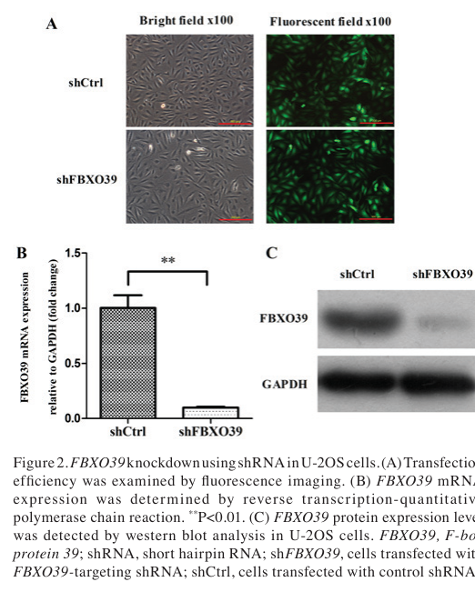

FBXO39 (F-box only protein 39) is a 442-amino-acid F-box protein that serves as the substrate-recognition component of an SCF (SKP1-CUL1-F-box protein)-type E3 ubiquitin ligase complex (a Cullin-RING ligase, CRL1). It contains an N-terminal F-box domain (residues ~16-61) through which it docks onto the SKP1-CUL1 scaffold, and a C-terminal leucine-rich-repeat (LRR)/RNI-like region predicted to mediate substrate binding. As an F-box "other" (FBXO) protein, FBXO39 acts as the interchangeable specificity subunit that targets substrate proteins for poly-ubiquitination and subsequent proteasomal degradation; the catalytic RING/E2-recruiting role within the complex is provided by RBX1/CUL1, not by FBXO39 itself. FBXO39 expression is testis-enriched and the gene is a cancer/testis antigen (historically named BCP-20), aberrantly re-expressed in several tumors (colorectal, glioma/glioblastoma, others), where it has been used as a prognostic/immunotherapy-candidate biomarker; knockdown in osteosarcoma cells reduces proliferation and increases apoptosis, indicating functional relevance to tumor-cell viability. The protein remains poorly characterized at the mechanistic level: no validated physiological substrate was established in the curated literature, although an emerging report proposes that FBXO39 promotes degradation of p53 to drive LDHA-mediated aerobic glycolysis in colorectal cancer. Its subcellular localization has not been experimentally determined.
| GO Term | Evidence | Action | Reason |
|---|---|---|---|
|
GO:0019005
SCF ubiquitin ligase complex
|
IBA
GO_REF:0000033 |
ACCEPT |
Summary: Phylogenetic (PAN-GO) assignment that FBXO39 is part of an SCF E3 ubiquitin ligase complex, consistent with its F-box domain and the UniProt-documented SKP1/CUL1 interaction. This is the core cellular-component assignment for an F-box protein.
Reason: Core localization/complex membership. FBXO39 has an F-box domain and is annotated by UniProt as a substrate-recognition component of the SCF complex that directly interacts with SKP1 and CUL1; ComplexPortal also defines an SCF complex variant containing FBXO39 (CPX-7979).
Supporting Evidence:
file:human/FBXO39/FBXO39-uniprot.txt
Substrate-recognition component of the SCF (SKP1-CUL1-F-box protein)-type E3 ubiquitin ligase complex.
|
|
GO:0031146
SCF-dependent proteasomal ubiquitin-dependent protein catabolic process
|
IBA
GO_REF:0000033 |
ACCEPT |
Summary: Phylogenetic (PAN-GO) assignment that FBXO39 participates in SCF-dependent proteasomal protein catabolism, the core biological process for an SCF substrate-recognition subunit.
Reason: Core biological process. As an SCF substrate-recognition component, FBXO39's function is to target substrates for SCF/proteasome-mediated degradation, consistent with the F-box domain and the Ubl conjugation pathway keyword in UniProt, and with the functional placement of FBXO39 as an F-box/SCF (CRL1) substrate-recognition receptor. Falcon-sourced literature supports this at the family level but confirms no validated FBXO39 substrate in the curated window (an emerging 2026 p53-degradation mechanism aside), so this remains an inferred core process rather than a substrate-specific one.
Supporting Evidence:
file:human/FBXO39/FBXO39-uniprot.txt
Substrate-recognition component of the SCF (SKP1-CUL1-F-box protein)-type E3 ubiquitin ligase complex.
file:human/FBXO39/FBXO39-deep-research-falcon.md
This is strongly supported as a *family-level mechanism* (xuan2024theemergingand pages 1-2, wang2014rolesoffbox pages 1-3), but **FBXO39-specific substrate repertoire remains poorly established** in the retrieved 2023–2024 literature.
|
|
GO:0005515
protein binding
|
IPI
PMID:32296183 A reference map of the human binary protein interactome. |
KEEP AS NON CORE |
Summary: IntAct binary interaction (HuRI reference interactome) between FBXO39 (Q8N4B4) and MEOX2 (Q6FHY5). The bare protein binding term is uninformative on its own; the interaction is recorded in the UniProt INTERACTION block.
Reason: Records a real binary interaction (FBXO39-MEOX2) from a high-throughput interactome, but bare protein binding is uninformative per curation guidelines and is not a core function. MEOX2 is a plausible candidate substrate but this has not been functionally validated.
Supporting Evidence:
file:human/FBXO39/FBXO39-uniprot.txt
Q8N4B4; Q6FHY5: MEOX2; NbExp=3; IntAct=EBI-12383478, EBI-16439278;
|
|
GO:0019005
SCF ubiquitin ligase complex
|
NAS
PMID:34445249 The SCF Complex Is Essential to Maintain Genome and Chromoso... |
ACCEPT |
Summary: ComplexPortal NAS assignment (from a review of the SCF complex family) that FBXO39 is part of an SCF E3 ubiquitin ligase complex. Redundant with, and consistent with, the IBA assignment and UniProt FUNCTION.
Reason: Core complex membership; corroborated by UniProt (substrate-recognition component; directly interacts with SKP1 and CUL1) and ComplexPortal CPX-7979. The cited review establishes that variable F-box proteins such as FBXO39 form SCF complexes that determine substrate specificity.
Supporting Evidence:
PMID:34445249
These SCF complexes are distinguishable by variable F-box proteins, which determine substrate specificity.
|
|
GO:0031146
SCF-dependent proteasomal ubiquitin-dependent protein catabolic process
|
NAS
PMID:34445249 The SCF Complex Is Essential to Maintain Genome and Chromoso... |
ACCEPT |
Summary: ComplexPortal NAS assignment (from the SCF-family review) that FBXO39 participates in SCF-dependent proteasomal protein catabolism. Redundant with the IBA assignment.
Reason: Core biological process; the cited review states that SCF E3 ligase complexes modify substrates with poly-ubiquitin chains to target them for proteasomal degradation, the canonical role of an F-box substrate-recognition subunit.
Supporting Evidence:
PMID:34445249
encompasses a group of 69 SCF E3 ubiquitin ligase complexes that primarily modify protein substrates with poly-ubiquitin chains to target them for proteasomal degradation
|
Q: What is the physiological substrate (or substrates) recognized by the FBXO39 LRR/C-terminal region, and are the candidate targets (MEOX2 from HuRI; p53 from the emerging colorectal-cancer report) bona fide direct SCF(FBXO39) ubiquitination substrates?
Q: Given the testis-enriched expression of FBXO39, does it have a specific role in spermatogenesis or germ-cell protein turnover, and how does this reconcile with its cancer/testis-antigen (BCP-20) re-expression and pro-tumorigenic phenotypes in cancer?
Q: Where does FBXO39 localize, and does its reported pro-proliferative/anti-apoptotic effect in tumor cells operate through SCF-dependent degradation of a growth-suppressive substrate (e.g. p53)?
Experiment: Reconstitute the SCF(FBXO39) complex (SKP1-CUL1-RBX1-FBXO39) in vitro and perform ubiquitination assays with candidate substrates (MEOX2, p53) to confirm substrate-receptor activity and identify ubiquitin-chain topology.
Experiment: Perform affinity-purification/proximity-labeling mass spectrometry of tagged FBXO39 in testis-derived or germ-cell models and in cancer cells to define the SCF(FBXO39) interactome and candidate substrate repertoire, validated by stabilization upon FBXO39 knockout.
Experiment: Determine FBXO39 subcellular localization (immunofluorescence, fractionation) and test whether its tumor-cell proliferation/apoptosis phenotype requires intact SCF assembly (F-box mutants) and degradation of specific substrates such as p53.
The research report should be a detailed narrative explaining the function, biological processes, and localization of the gene product. Citations should be given for all claims.
You should prioritize authoritative reviews and primary scientific literature when conducting research. You can supplement
this with annotations you find in gene/protein databases, but these can be outdated or inaccurate.
We are specifically interested in the primary function of the gene - for enzymes, what reaction is catalyzed, and what is the substrate specificity? For transporters, what is the substrate? For structural proteins or adapters, what is the broader structural role? For signaling molecules, what is the role in the pathway.
We are interested in where in or outside the cell the gene product carries out its function.
We are also interested in the signaling or biochemical pathways in which the gene functions. We are less interested in broad pleiotropic effects, except where these elucidate the precise role.
Include evidence where possible. We are interested in both experimental evidence as well as inference from structure, evolution, or bioinformatic analysis. Precise studies should be prioritized over high-throughput, where available.
Gene/protein identity. The evidence set consistently refers to the human gene FBXO39 (approved symbol FBXO39; approved name “F-box protein 39”), matching the target described as F-box only protein 39 (UniProt Q8N4B4) (OpenTargets Search: -FBXO39). The same symbol is used in multiple human cancer and transcriptomic studies, without evidence of symbol collision in another organism in the retrieved sources (zheng2018knockdownoffbxo39 pages 3-5, azimi2025cancertestisantigensfbxo39 pages 10-13).
Organism. All mechanistic/biomarker studies cited here are in human tissues/cell lines or human datasets (TCGA/CGGA) (zheng2018knockdownoffbxo39 pages 3-5, azimi2025cancertestisantigensfbxo39 pages 10-13, motalebzadeh2018prognosticvalueof pages 1-2).
Domain expectations vs retrieved literature. UniProt/domain databases describe Q8N4B4 as containing an F-box and leucine-rich repeats (LRR) (user-provided UniProt/domain context). The retrieved review literature provides the general, canonical mapping: F-box proteins have an F-box motif binding SKP1 and variable C-terminal substrate-recognition domains; domain-based subclasses include FBXL (LRR), FBXW (WD40), and FBXO (other domains) (xuan2024theemergingand pages 1-2, wang2014rolesoffbox pages 1-3). However, the retrieved primary FBXO39 papers do not directly re-demonstrate FBXO39’s specific LRR architecture or binding to SKP1/CUL1/RBX1; therefore, these features should be treated as domain-informed inference, not FBXO39-specific experimental proof in this evidence set.
SCF/CRL1 concept. F-box proteins are widely defined as substrate-recognition subunits of the SCF (SKP1–CUL1–RBX1–F-box) E3 ubiquitin ligase family (also called CRL1), which ubiquitinates target proteins for proteasomal degradation (xuan2024theemergingand pages 1-2, wang2014rolesoffbox pages 1-3). The SCF core is relatively invariant (SKP1, CUL1, RBX1), whereas the F-box protein is variable and confers substrate specificity (wang2014rolesoffbox pages 1-3).
Domain logic. Canonically, an F-box protein contains:
- an F-box motif that mediates binding to SKP1; and
- a C-terminal substrate-recognition region that binds degrons (often post-translationally modified) in substrates (wang2014rolesoffbox pages 1-3).
Degron recognition. Substrate binding often depends on degrons, frequently phosphodegrons, but can involve other motifs including glycosylation-dependent recognition (examples in review: FBXO6 recognition of a glycosylated degron; FBXO2 binding high-mannose motifs) (xuan2024theemergingand pages 1-2, wang2014rolesoffbox pages 1-3).
Definition. CTAs are typically expressed in testis (and sometimes placenta) with limited expression in normal somatic tissues, but are aberrantly re-expressed in cancers—making them attractive targets for immunotherapy and biomarkers (azimi2025cancertestisantigensfbxo39 pages 15-16, zhuo2024unveilingthesignificance pages 1-2). FBXO39 is repeatedly discussed in the CTA context and is also known as BCP-20 in older SEREX discovery literature, as summarized in later studies (azimi2025cancertestisantigensfbxo39 pages 15-16, motalebzadeh2018prognosticvalueof pages 1-2).
Given UniProt/domain context (F-box + LRR) and general F-box protein principles, the most plausible primary molecular function for FBXO39 is as a substrate adaptor in an SCF-type E3 ligase, coupling specific substrates to ubiquitination and consequent changes in stability or function. This is strongly supported as a family-level mechanism (xuan2024theemergingand pages 1-2, wang2014rolesoffbox pages 1-3), but FBXO39-specific substrate repertoire remains poorly established in the retrieved 2023–2024 literature.
Osteosarcoma cell growth and apoptosis. In human osteosarcoma U-2OS cells, lentiviral shRNA knockdown of FBXO39 reduced proliferation (Celigo-based counts; MTT assays) and increased apoptosis (Annexin V flow cytometry; caspase 3/7 activity), with reported significance thresholds including P<0.01 for caspase activation (zheng2018knockdownoffbxo39 pages 3-5). These findings are visually supported by the paper’s figures showing knockdown validation and phenotypic assays (zheng2018knockdownoffbxo39 media ae423a55, zheng2018knockdownoffbxo39 media 416a7e10, zheng2018knockdownoffbxo39 media b61568b9).
Interpretation. This establishes FBXO39 as functionally relevant for tumor cell viability in at least one in vitro cancer model, but does not identify the direct biochemical substrate(s) or cellular compartment where FBXO39 acts (zheng2018knockdownoffbxo39 pages 3-5).
Evidence status in 2023–2024. In the retrieved 2023–2024 sources, FBXO39 is mainly treated as a biomarker/CTA; no experimentally validated substrates for FBXO39 are reported in those snippets (azimi2025cancertestisantigensfbxo39 pages 10-13, zhuo2024unveilingthesignificance pages 1-2).
Later mechanistic report (post-2024, included for completeness). A 2026 colorectal cancer study proposes a specific mechanism: FBXO39 promotes colorectal cancer progression and LDHA-mediated aerobic glycolysis via p53 degradation, supported by co-immunoprecipitation, ubiquitination assays with proteasome inhibition (MG132), chromatin immunoprecipitation and promoter assays for LDHA regulation by p53, Seahorse metabolic flux assays, and xenografts (n=5) (liu2026fbxo39promotesldhamediated pages 4-6). Because this is 2026, it is outside the user’s preferred 2023–2024 window and should be treated as emerging rather than established.
No direct subcellular localization experiments for FBXO39 (e.g., IF microscopy, cell fractionation) were found in the retrieved evidence snippets (zheng2018knockdownoffbxo39 pages 3-5, azimi2025cancertestisantigensfbxo39 pages 10-13). Consequently, localization is currently undetermined in this evidence set.
A 2024 review of F-box proteins in spermatogenesis/male infertility lists FBXO39 among F-box proteins found at the highest levels in the testis (without giving FBXO39-specific mechanistic data) (xuan2024theemergingand pages 7-8). The same review provides a conceptual framework that SCF/F-box complexes regulate germ cell development through regulated proteolysis and that many testis-enriched F-box proteins remain mechanistically uncharacterized (xuan2024theemergingand pages 1-2, xuan2024theemergingand pages 7-8).
CTA identity and discovery. Multiple sources summarize FBXO39 as a CTA identified in colon cancer by SEREX and known as BCP-20/FBXO39 (azimi2025cancertestisantigensfbxo39 pages 15-16, motalebzadeh2018prognosticvalueof pages 1-2).
Colorectal cancer tissue restriction. In a cohort of 36 Iranian colorectal cancer patients, FBXO39 expression measured by RT-PCR was reported as restricted to tumor tissues, with testis as positive control; expression was detected in all stage-0 tumor samples and associated with lymph node involvement (motalebzadeh2018prognosticvalueof pages 1-2).
A 2023 glioma paper constructed an HHV-6/HHV-7 infection-related signature (HI model) including FBXO39 with a reported coefficient of 0.223492 in the risk score formula (azimi2025cancertestisantigensfbxo39 pages 10-13). This is a computational prognostic signature and should be interpreted as association rather than proof of causality.
A 2024 CTA review of glioma describes FBXO39 as associated with poorer GBM prognosis and summarizes that FBXO39 may enhance invasion/migration and promote growth/stemness of glioma stem cells (zhuo2024unveilingthesignificance pages 1-2). The excerpt is qualitative and does not provide study design details or effect sizes.
A 2023 review of CTAs in digestive tract cancers lists FBXO39 (BCP-20) among CTAs frequently expressed in colorectal cancer, positioning it as a potential immunotherapy target class (azimi2025cancertestisantigensfbxo39 pages 15-16). The review-level evidence supports rationale for targeting CTAs but does not constitute FBXO39-specific clinical validation.
Open Targets aggregates FBXO39 associations with multiple cancers, including glioblastoma multiforme, cervical carcinoma/cervical squamous cell carcinoma, colorectal carcinoma, and breast cancer, with linked literature identifiers (OpenTargets Search: -FBXO39). These are useful for triangulating relevance but are not mechanistic proof.
GBM survival analyses (2025; included for quantitative detail). In a 2025 GBM CTA-focused study, Cox model outputs for FBXO39 were reported as:
- TCGA cohort: β = −0.354; HR = 0.702 (95% CI 0.218–2.263); P = 0.554
- CGGA cohort: β = 0.196; HR = 1.217 (95% CI 0.957–1.547); P = 0.109
and a local cohort showed no significant survival difference (P = 0.12), despite reporting FBXO39 upregulation in 29 GBM tissues vs 2 normal tissues (azimi2025cancertestisantigensfbxo39 pages 10-13).
CRC clinicopathologic association (2018). FBXO39 expression showed a “significant relation” with lymph node involvement in the CRC cohort, though the excerpt did not provide the exact p-value or effect size (motalebzadeh2018prognosticvalueof pages 1-2).
The strongest direct functional evidence in the retrieved set is the osteosarcoma knockdown work showing reduced proliferation and increased apoptosis after FBXO39 silencing, supporting the general concept that FBXO39 could be a vulnerability in certain tumor contexts (zheng2018knockdownoffbxo39 pages 3-5, zheng2018knockdownoffbxo39 media ae423a55).
| Evidence category | Key findings | Study type/methods | Quantitative/statistical data (HR/beta/p-values/sample size) | Year | Citation ID |
|---|---|---|---|---|---|
| identity/domains | FBXO39 is the human gene/protein matching UniProt Q8N4B4 and is described in the literature as F-box protein 39, a member of the F-box family; available snippets support SCF E3 ligase adaptor context but do not provide direct experimental confirmation of its LRR domains or family-specific biochemistry. | Database/disease-association aggregation; family-context statements in experimental papers and reviews | Open Targets lists approved symbol FBXO39 linked to ENSG00000177294; no direct domain statistics in retrieved snippets | 2025/NA | (OpenTargets Search: -FBXO39, zheng2018knockdownoffbxo39 pages 3-5) |
| molecular function | Available direct evidence supports a pro-proliferative, anti-apoptotic role in U-2OS osteosarcoma cells; broader literature frames FBXO39 as an F-box protein involved in substrate recognition for SCF ubiquitin ligases. | Lentiviral shRNA knockdown, RT-qPCR, western blot, Celigo cell counting, MTT, caspase 3/7 assay, Annexin V FACS | Knockdown increased caspase 3/7 activity vs control (P<0.01) and significantly reduced proliferation; statistical threshold reported as P<0.05/P<0.01 | 2018 | (zheng2018knockdownoffbxo39 pages 3-5, zheng2018knockdownoffbxo39 media ae423a55) |
| substrates/mechanism | No experimentally validated substrate is provided in the 2018 osteosarcoma or 2025 GBM snippets. A later mechanistic report (outside the user's 2023–2024 priority window) proposes that FBXO39 promotes colorectal cancer by mediating p53 degradation, increasing LDHA-driven aerobic glycolysis. | Mechanistic cancer study using Co-IP, ubiquitination assay, MG132 treatment, ChIP-qPCR, dual-luciferase assay, Seahorse OCR/ECAR, xenografts | Xenograft design included 1×10^6 CRC cells, n=5 mice; excerpt states FBXO39 was an independent risk factor, but no HR/p-value numbers were provided in the snippet | 2026 | (liu2026fbxo39promotesldhamediated pages 4-6) |
| localization | No direct subcellular localization data for FBXO39 were present in the retrieved evidence snippets. | No direct localization assay in retrieved snippets | Not reported | NA | (zheng2018knockdownoffbxo39 pages 3-5, azimi2025cancertestisantigensfbxo39 pages 10-13) |
| expression/CTA | FBXO39 is repeatedly described as a cancer-testis antigen (CTA), originally identified as BCP-20/FBXO39 in colon cancer by SEREX; expression is characterized as testis-restricted among normal tissues and aberrantly expressed in multiple cancers. In CRC, one study found expression restricted to tumor tissues, using testis as positive control. | SEREX discovery; RT-PCR in tumor vs adjacent normal tissue; review/bioinformatic synthesis | CRC cohort n=36; FBXO39 expression detected in all stage-0 tumor samples; no FBXO39-specific p-value given in the excerpt for tumor restriction | 2018–2025 | (azimi2025cancertestisantigensfbxo39 pages 15-16, motalebzadeh2018prognosticvalueof pages 1-2, czerewaty2024expressionofcancer pages 10-11) |
| disease associations/prognosis | CRC: FBXO39 expression associated with lymph node involvement and proposed prognostic value. GBM: expression reported upregulated in 29 tumors vs 2 normals, but Cox results in TCGA/CGGA were not statistically significant in the provided excerpt. Glioma/GBM reviews also summarize links to poorer prognosis, invasion, migration, growth, and stemness. Open Targets lists disease associations for glioblastoma, cervical carcinoma, cervical squamous cell carcinoma, colorectal carcinoma, and breast cancer. | RT-PCR; TCGA/CGGA bioinformatics; Kaplan-Meier/Cox analyses; review synthesis; Open Targets evidence aggregation | CRC cohort n=36; GBM local cohort 29 tumors vs 2 normals; TCGA Cox: β=-0.354, HR=0.702, 95% CI 0.218–2.263, P=0.554; CGGA Cox: β=0.196, HR=1.217, 95% CI 0.957–1.547, P=0.109; local cohort survival P=0.12 | 2018–2025 | (azimi2025cancertestisantigensfbxo39 pages 10-13, motalebzadeh2018prognosticvalueof pages 1-2, zhuo2024unveilingthesignificance pages 1-2, OpenTargets Search: -FBXO39) |
| applications/therapeutics | Current translational relevance is mainly as a biomarker/immunotherapy candidate rather than a validated drug target. CTA-focused reviews identify FBXO39 as a potential immunotherapy antigen in digestive cancers and glioma, and a 2025 GBM study concluded FBXO39 expression measurement may have prognostic biomarker utility. No FBXO39-specific clinical trial was identified in the retrieved evidence. | CTA reviews; bioinformatic/clinical biomarker study | Open Targets evidence size = 3 for each listed disease association in retrieved output; GBM validation cohort n=29 | 2023–2025 | (azimi2025cancertestisantigensfbxo39 pages 15-16, zhuo2024unveilingthesignificance pages 1-2, OpenTargets Search: -FBXO39) |
Table: This table consolidates the retrieved evidence for human FBXO39/Q8N4B4 across identity, function, mechanism, expression, prognosis, and translational relevance. It highlights where evidence is direct versus limited, which is useful for cautious functional annotation of this poorly characterized gene.
References
(OpenTargets Search: -FBXO39): Open Targets Query (-FBXO39, 5 results). Buniello, A. et al. (2025). Open Targets Platform: facilitating therapeutic hypotheses building in drug discovery. Nucleic Acids Research.
(zheng2018knockdownoffbxo39 pages 3-5): Jianrong Zheng, Wei You, Chuanxi Zheng, Peng Wan, Jinquan Chen, Xiaochun Jiang, Zhixiang Zhu, Zhixiong Zhang, Anqi Gong, Wei Li, Jifeng Tan, Tao Ji, Wei Guo, and Shiquan Zhang. Knockdown of fbxo39 inhibits proliferation and promotes apoptosis of human osteosarcoma u-2os cells. Oncology letters, 16 2:1849-1854, Jun 2018. URL: https://doi.org/10.3892/ol.2018.8876, doi:10.3892/ol.2018.8876. This article has 10 citations and is from a peer-reviewed journal.
(azimi2025cancertestisantigensfbxo39 pages 10-13): Parisa Azimi, Maryam Bazrgar, Taravat Yazdanian, Mehdi Totonchi, and Abolhassan Ahmadiani. Cancer/testis antigens fbxo39 and cep55 expression correlates with survival in gbm patients. PLOS One, 20:e0326054, Jun 2025. URL: https://doi.org/10.1371/journal.pone.0326054, doi:10.1371/journal.pone.0326054. This article has 1 citations and is from a peer-reviewed journal.
(motalebzadeh2018prognosticvalueof pages 1-2): Jamshid Motalebzadeh, Samira Shabani, S. Rezayati, N. Shakournia, R. Mirzaei, B. Mahjoubi, K. Hoseini, and F. Mahjoubi. Prognostic value of fbxo39 and ets-1 but not bmi-1 in iranian colorectal cancer patients. Asian Pacific Journal of Cancer Prevention : APJCP, 19:1357-1362, May 2018. URL: https://doi.org/10.22034/apjcp.2018.19.5.1357, doi:10.22034/apjcp.2018.19.5.1357. This article has 10 citations.
(xuan2024theemergingand pages 1-2): Zhuang Xuan, Jun Ruan, Canquan Zhou, and Zhi-ming Li. The emerging and diverse roles of f-box proteins in spermatogenesis and male infertility. Cell Regeneration, Jun 2024. URL: https://doi.org/10.1186/s13619-024-00196-9, doi:10.1186/s13619-024-00196-9. This article has 5 citations.
(wang2014rolesoffbox pages 1-3): Zhiwei Wang, Pengda Liu, Hiroyuki Inuzuka, and Wenyi Wei. Roles of f-box proteins in cancer. Nature Reviews Cancer, 14:233-247, Mar 2014. URL: https://doi.org/10.1038/nrc3700, doi:10.1038/nrc3700. This article has 586 citations and is from a domain leading peer-reviewed journal.
(azimi2025cancertestisantigensfbxo39 pages 15-16): Parisa Azimi, Maryam Bazrgar, Taravat Yazdanian, Mehdi Totonchi, and Abolhassan Ahmadiani. Cancer/testis antigens fbxo39 and cep55 expression correlates with survival in gbm patients. PLOS One, 20:e0326054, Jun 2025. URL: https://doi.org/10.1371/journal.pone.0326054, doi:10.1371/journal.pone.0326054. This article has 1 citations and is from a peer-reviewed journal.
(zhuo2024unveilingthesignificance pages 1-2): Shenghua Zhuo, Shuo Yang, Shenbo Chen, Yueju Ding, Honglei Cheng, Liangwang Yang, Kai Wang, and Kun Yang. Unveiling the significance of cancer-testis antigens and their implications for immunotherapy in glioma. Discover Oncology, Oct 2024. URL: https://doi.org/10.1007/s12672-024-01449-4, doi:10.1007/s12672-024-01449-4. This article has 5 citations.
(zheng2018knockdownoffbxo39 media ae423a55): Jianrong Zheng, Wei You, Chuanxi Zheng, Peng Wan, Jinquan Chen, Xiaochun Jiang, Zhixiang Zhu, Zhixiong Zhang, Anqi Gong, Wei Li, Jifeng Tan, Tao Ji, Wei Guo, and Shiquan Zhang. Knockdown of fbxo39 inhibits proliferation and promotes apoptosis of human osteosarcoma u-2os cells. Oncology letters, 16 2:1849-1854, Jun 2018. URL: https://doi.org/10.3892/ol.2018.8876, doi:10.3892/ol.2018.8876. This article has 10 citations and is from a peer-reviewed journal.
(zheng2018knockdownoffbxo39 media 416a7e10): Jianrong Zheng, Wei You, Chuanxi Zheng, Peng Wan, Jinquan Chen, Xiaochun Jiang, Zhixiang Zhu, Zhixiong Zhang, Anqi Gong, Wei Li, Jifeng Tan, Tao Ji, Wei Guo, and Shiquan Zhang. Knockdown of fbxo39 inhibits proliferation and promotes apoptosis of human osteosarcoma u-2os cells. Oncology letters, 16 2:1849-1854, Jun 2018. URL: https://doi.org/10.3892/ol.2018.8876, doi:10.3892/ol.2018.8876. This article has 10 citations and is from a peer-reviewed journal.
(zheng2018knockdownoffbxo39 media b61568b9): Jianrong Zheng, Wei You, Chuanxi Zheng, Peng Wan, Jinquan Chen, Xiaochun Jiang, Zhixiang Zhu, Zhixiong Zhang, Anqi Gong, Wei Li, Jifeng Tan, Tao Ji, Wei Guo, and Shiquan Zhang. Knockdown of fbxo39 inhibits proliferation and promotes apoptosis of human osteosarcoma u-2os cells. Oncology letters, 16 2:1849-1854, Jun 2018. URL: https://doi.org/10.3892/ol.2018.8876, doi:10.3892/ol.2018.8876. This article has 10 citations and is from a peer-reviewed journal.
(liu2026fbxo39promotesldhamediated pages 4-6): Jipeng Liu, Taifu Xiao, and Jun Huang. Fbxo39 promotes ldha-mediated aerobic glycolysis and colorectal cancer progression by p53 degradation. Journal of Translational Medicine, Apr 2026. URL: https://doi.org/10.1186/s12967-026-08056-7, doi:10.1186/s12967-026-08056-7. This article has 0 citations and is from a peer-reviewed journal.
(xuan2024theemergingand pages 7-8): Zhuang Xuan, Jun Ruan, Canquan Zhou, and Zhi-ming Li. The emerging and diverse roles of f-box proteins in spermatogenesis and male infertility. Cell Regeneration, Jun 2024. URL: https://doi.org/10.1186/s13619-024-00196-9, doi:10.1186/s13619-024-00196-9. This article has 5 citations.
(czerewaty2024expressionofcancer pages 10-11): M Czerewaty and M Tarnowski. Expression of cancer testis genes in gastric neoplasms—a preliminary study. Unknown journal, 2024.

UPS|E3 ubiquitin and UBL ligases|Cul1 substrate receptor|F-box|LRR ; PN-node mapping: F-box subtype/type = no_mapping; group = mapped, ok_for_propagation_to_go, GO:1990756; class = context_only/too_broad (GO:0061630).This file is generated from the current PROTEOSTASIS phase-1 dossier and local gene-review artifacts. Edit the source review, PN mapping, or dossier rather than this generated note when correcting the underlying curation.
id: Q8N4B4
gene_symbol: FBXO39
product_type: PROTEIN
status: COMPLETE
taxon:
id: NCBITaxon:9606
label: Homo sapiens
description: >-
FBXO39 (F-box only protein 39) is a 442-amino-acid F-box protein that serves
as the substrate-recognition component of an SCF (SKP1-CUL1-F-box protein)-type
E3 ubiquitin ligase complex (a Cullin-RING ligase, CRL1). It contains an
N-terminal F-box domain (residues ~16-61) through which it docks onto the
SKP1-CUL1 scaffold, and a C-terminal leucine-rich-repeat (LRR)/RNI-like
region predicted to mediate substrate binding. As an F-box "other" (FBXO)
protein, FBXO39 acts as the interchangeable specificity subunit that targets
substrate proteins for poly-ubiquitination and subsequent proteasomal
degradation; the catalytic RING/E2-recruiting role within the complex is
provided by RBX1/CUL1, not by FBXO39 itself. FBXO39 expression is testis-enriched
and the gene is a cancer/testis antigen (historically named BCP-20), aberrantly
re-expressed in several tumors (colorectal, glioma/glioblastoma, others), where
it has been used as a prognostic/immunotherapy-candidate biomarker; knockdown in
osteosarcoma cells reduces proliferation and increases apoptosis, indicating
functional relevance to tumor-cell viability. The protein remains poorly
characterized at the mechanistic level: no validated physiological substrate was
established in the curated literature, although an emerging report proposes that
FBXO39 promotes degradation of p53 to drive LDHA-mediated aerobic glycolysis in
colorectal cancer. Its subcellular localization has not been experimentally
determined.
existing_annotations:
- term:
id: GO:0019005
label: SCF ubiquitin ligase complex
evidence_type: IBA
original_reference_id: GO_REF:0000033
qualifier: part_of
review:
summary: Phylogenetic (PAN-GO) assignment that FBXO39 is part of an SCF E3 ubiquitin ligase complex, consistent with its F-box domain and the UniProt-documented SKP1/CUL1 interaction. This is the core cellular-component assignment for an F-box protein.
action: ACCEPT
reason: Core localization/complex membership. FBXO39 has an F-box domain and is annotated by UniProt as a substrate-recognition component of the SCF complex that directly interacts with SKP1 and CUL1; ComplexPortal also defines an SCF complex variant containing FBXO39 (CPX-7979).
supported_by:
- reference_id: file:human/FBXO39/FBXO39-uniprot.txt
supporting_text: Substrate-recognition component of the SCF (SKP1-CUL1-F-box protein)-type E3 ubiquitin ligase complex.
- term:
id: GO:0031146
label: SCF-dependent proteasomal ubiquitin-dependent protein catabolic process
evidence_type: IBA
original_reference_id: GO_REF:0000033
qualifier: involved_in
review:
summary: Phylogenetic (PAN-GO) assignment that FBXO39 participates in SCF-dependent proteasomal protein catabolism, the core biological process for an SCF substrate-recognition subunit.
action: ACCEPT
reason: Core biological process. As an SCF substrate-recognition component, FBXO39's function is to target substrates for SCF/proteasome-mediated degradation, consistent with the F-box domain and the Ubl conjugation pathway keyword in UniProt, and with the functional placement of FBXO39 as an F-box/SCF (CRL1) substrate-recognition receptor. Falcon-sourced literature supports this at the family level but confirms no validated FBXO39 substrate in the curated window (an emerging 2026 p53-degradation mechanism aside), so this remains an inferred core process rather than a substrate-specific one.
supported_by:
- reference_id: file:human/FBXO39/FBXO39-uniprot.txt
supporting_text: Substrate-recognition component of the SCF (SKP1-CUL1-F-box protein)-type E3 ubiquitin ligase complex.
- reference_id: file:human/FBXO39/FBXO39-deep-research-falcon.md
supporting_text: This is strongly supported as a *family-level mechanism* (xuan2024theemergingand pages 1-2, wang2014rolesoffbox pages 1-3), but **FBXO39-specific substrate repertoire remains poorly established** in the retrieved 2023–2024 literature.
- term:
id: GO:0005515
label: protein binding
evidence_type: IPI
original_reference_id: PMID:32296183
qualifier: enables
review:
summary: IntAct binary interaction (HuRI reference interactome) between FBXO39 (Q8N4B4) and MEOX2 (Q6FHY5). The bare protein binding term is uninformative on its own; the interaction is recorded in the UniProt INTERACTION block.
action: KEEP_AS_NON_CORE
reason: Records a real binary interaction (FBXO39-MEOX2) from a high-throughput interactome, but bare protein binding is uninformative per curation guidelines and is not a core function. MEOX2 is a plausible candidate substrate but this has not been functionally validated.
supported_by:
- reference_id: file:human/FBXO39/FBXO39-uniprot.txt
supporting_text: 'Q8N4B4; Q6FHY5: MEOX2; NbExp=3; IntAct=EBI-12383478, EBI-16439278;'
- term:
id: GO:0019005
label: SCF ubiquitin ligase complex
evidence_type: NAS
original_reference_id: PMID:34445249
qualifier: part_of
review:
summary: ComplexPortal NAS assignment (from a review of the SCF complex family) that FBXO39 is part of an SCF E3 ubiquitin ligase complex. Redundant with, and consistent with, the IBA assignment and UniProt FUNCTION.
action: ACCEPT
reason: Core complex membership; corroborated by UniProt (substrate-recognition component; directly interacts with SKP1 and CUL1) and ComplexPortal CPX-7979. The cited review establishes that variable F-box proteins such as FBXO39 form SCF complexes that determine substrate specificity.
supported_by:
- reference_id: PMID:34445249
supporting_text: These SCF complexes are distinguishable by variable F-box proteins, which determine substrate specificity.
- term:
id: GO:0031146
label: SCF-dependent proteasomal ubiquitin-dependent protein catabolic process
evidence_type: NAS
original_reference_id: PMID:34445249
qualifier: involved_in
review:
summary: ComplexPortal NAS assignment (from the SCF-family review) that FBXO39 participates in SCF-dependent proteasomal protein catabolism. Redundant with the IBA assignment.
action: ACCEPT
reason: Core biological process; the cited review states that SCF E3 ligase complexes modify substrates with poly-ubiquitin chains to target them for proteasomal degradation, the canonical role of an F-box substrate-recognition subunit.
supported_by:
- reference_id: PMID:34445249
supporting_text: encompasses a group of 69 SCF E3 ubiquitin ligase complexes that primarily modify protein substrates with poly-ubiquitin chains to target them for proteasomal degradation
references:
- id: GO_REF:0000033
title: Annotation inferences using phylogenetic trees
findings: []
- id: PMID:32296183
title: A reference map of the human binary protein interactome.
findings:
- statement: HuRI all-by-all binary interactome; the FBXO39 (Q8N4B4) interaction with MEOX2 (Q6FHY5) derives from this systematic yeast two-hybrid map.
reference_section_type: ABSTRACT
reference_review:
relevance: LOW
correctness: VERIFIED
review_notes: High-throughput binary interactome (HuRI). Source of the bare GO:0005515 protein binding annotation (FBXO39-MEOX2). Interaction is also recorded in the UniProt INTERACTION block; informative as a candidate-substrate lead but not a validated function.
- id: PMID:34445249
title: The SCF Complex Is Essential to Maintain Genome and Chromosome Stability.
findings:
- statement: Review establishing that the SCF (SKP1-CUL1-F-box protein) family comprises ~69 E3 ligase complexes whose interchangeable F-box proteins determine substrate specificity and target substrates for proteasomal degradation.
reference_section_type: ABSTRACT
reference_review:
relevance: MEDIUM
correctness: VERIFIED
review_notes: PubMed-verified review (Int J Mol Sci 2021). Cited by ComplexPortal as NAS basis for FBXO39 SCF complex membership and SCF-dependent catabolic process. Function-level support is family/complex-level, not FBXO39-specific experimental data; abstract-only in cache.
- id: file:human/FBXO39/FBXO39-deep-research-falcon.md
title: Falcon deep research report for human FBXO39
findings:
- statement: FBXO39 is inferred to act as a substrate adaptor of an SCF/CRL1 E3 ligase from its F-box+LRR architecture, but its FBXO39-specific substrate repertoire remains poorly established and no validated substrate was reported in the curated literature.
supporting_text: This is strongly supported as a *family-level mechanism* (xuan2024theemergingand pages 1-2, wang2014rolesoffbox pages 1-3), but **FBXO39-specific substrate repertoire remains poorly established** in the retrieved 2023–2024 literature.
- statement: FBXO39 is a cancer/testis antigen (BCP-20), testis-enriched and aberrantly re-expressed in tumors, and its knockdown in osteosarcoma cells reduces proliferation and increases apoptosis.
supporting_text: lentiviral shRNA knockdown of FBXO39 reduced proliferation (Celigo-based counts; MTT assays) and increased apoptosis (Annexin V flow cytometry; caspase 3/7 activity)
- statement: An emerging (2026) report proposes FBXO39 promotes colorectal cancer progression and LDHA-mediated aerobic glycolysis via p53 degradation, supported by co-IP and ubiquitination assays, but this is outside the curated window and treated as emerging.
supporting_text: FBXO39 promotes colorectal cancer progression and LDHA-mediated aerobic glycolysis via **p53 degradation**
reference_review:
relevance: MEDIUM
correctness: UNVERIFIED
review_notes: >-
Falcon synthesis anchored on Zheng et al. 2018 (osteosarcoma knockdown),
Motalebzadeh et al. 2018 (CRC CTA/BCP-20), Azimi et al. 2025 and Zhuo et al.
2024 (glioma CTA biomarker), Xuan et al. 2024 (testis expression), and an
emerging 2026 colorectal-cancer p53/LDHA mechanism (Liu et al.). The CTA
identity and cancer-biomarker context are well supported; the p53-substrate
mechanism is a single emerging (2026) lead. Falcon cites author-year/DOIs not
PMIDs and the papers are not in the local cache, so claims are treated as
leads (UNVERIFIED) and not promoted to new substrate-specific GO terms.
core_functions:
- description: Substrate-recognition (specificity) component of an SCF (SKP1-CUL1-F-box protein) / CRL1 E3 ubiquitin ligase complex; via its F-box domain it docks onto SKP1-CUL1 and recruits substrate proteins for poly-ubiquitination, committing them to SCF-dependent proteasomal degradation. The catalytic E2-recruiting activity is provided by the RBX1/CUL1 core, while FBXO39 functions as a ubiquitin-like ligase-substrate adaptor.
molecular_function:
id: GO:1990756
label: ubiquitin-like ligase-substrate adaptor activity
locations:
- id: GO:0005737
label: cytoplasm
supported_by:
- reference_id: file:human/FBXO39/FBXO39-uniprot.txt
supporting_text: Substrate-recognition component of the SCF (SKP1-CUL1-F-box protein)-type E3 ubiquitin ligase complex.
- reference_id: file:human/FBXO39/FBXO39-uniprot.txt
supporting_text: Directly interacts with SKP1 and CUL1.
directly_involved_in:
- id: GO:0031146
label: SCF-dependent proteasomal ubiquitin-dependent protein catabolic process
proposed_new_terms: []
suggested_questions:
- question: What is the physiological substrate (or substrates) recognized by the FBXO39 LRR/C-terminal region, and are the candidate targets (MEOX2 from HuRI; p53 from the emerging colorectal-cancer report) bona fide direct SCF(FBXO39) ubiquitination substrates?
- question: Given the testis-enriched expression of FBXO39, does it have a specific role in spermatogenesis or germ-cell protein turnover, and how does this reconcile with its cancer/testis-antigen (BCP-20) re-expression and pro-tumorigenic phenotypes in cancer?
- question: Where does FBXO39 localize, and does its reported pro-proliferative/anti-apoptotic effect in tumor cells operate through SCF-dependent degradation of a growth-suppressive substrate (e.g. p53)?
suggested_experiments:
- description: Reconstitute the SCF(FBXO39) complex (SKP1-CUL1-RBX1-FBXO39) in vitro and perform ubiquitination assays with candidate substrates (MEOX2, p53) to confirm substrate-receptor activity and identify ubiquitin-chain topology.
- description: Perform affinity-purification/proximity-labeling mass spectrometry of tagged FBXO39 in testis-derived or germ-cell models and in cancer cells to define the SCF(FBXO39) interactome and candidate substrate repertoire, validated by stabilization upon FBXO39 knockout.
- description: Determine FBXO39 subcellular localization (immunofluorescence, fractionation) and test whether its tumor-cell proliferation/apoptosis phenotype requires intact SCF assembly (F-box mutants) and degradation of specific substrates such as p53.
{kind=link}